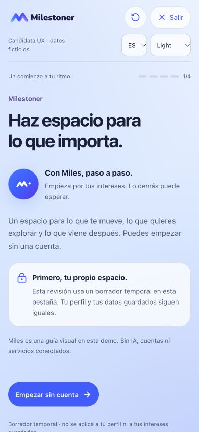
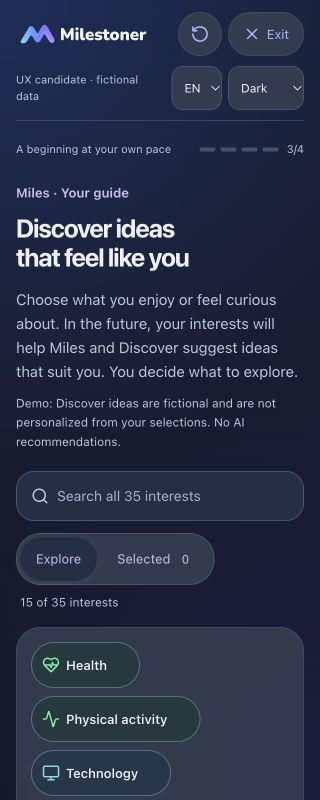
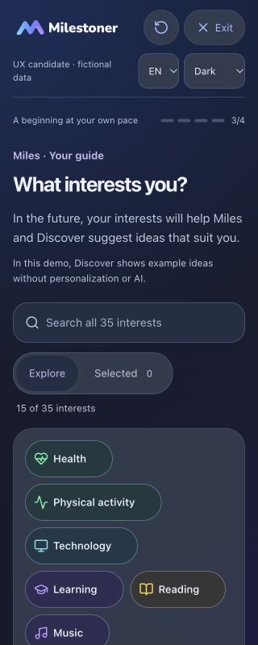
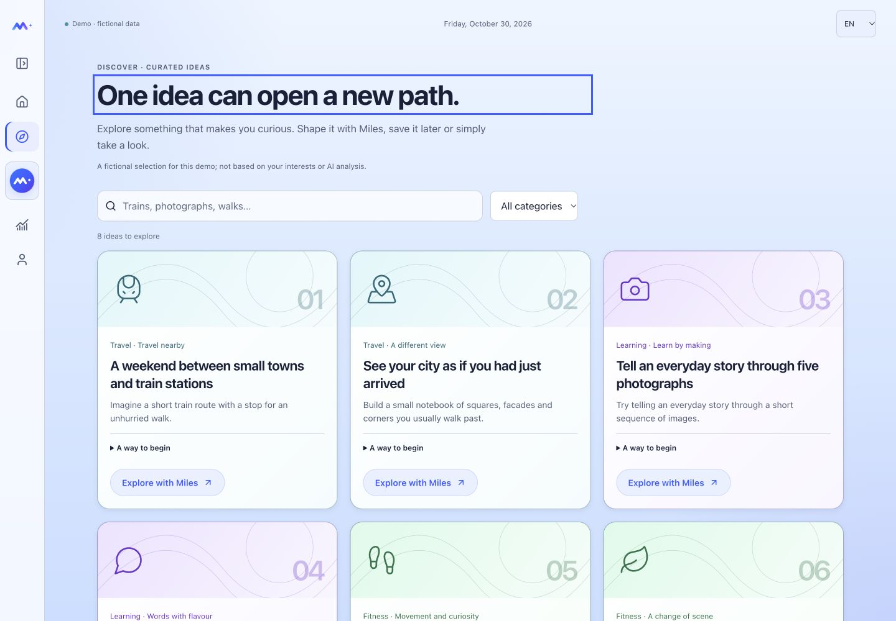
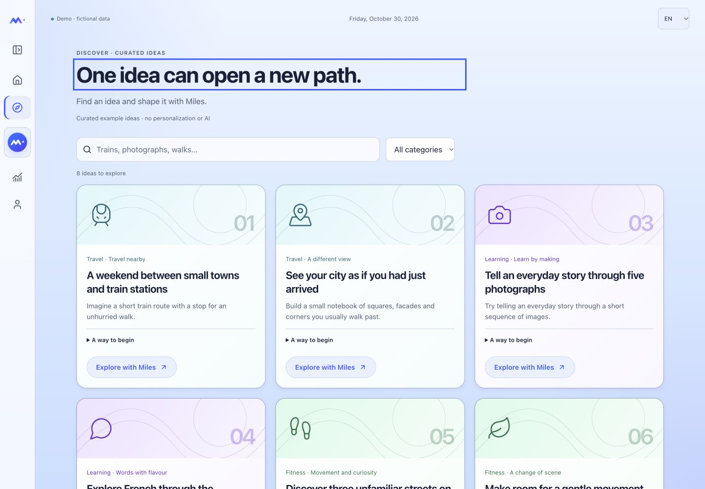
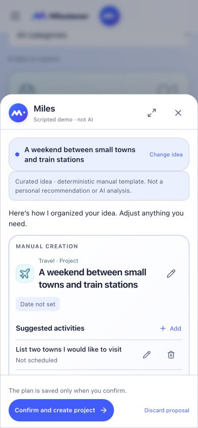
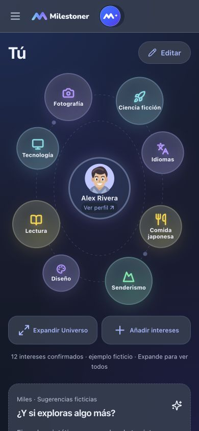
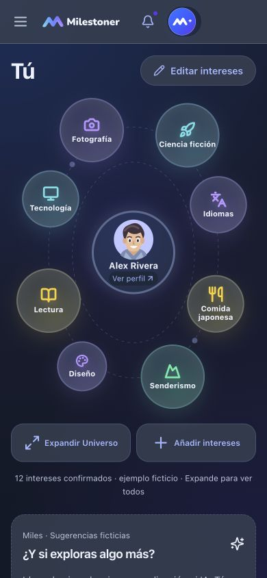
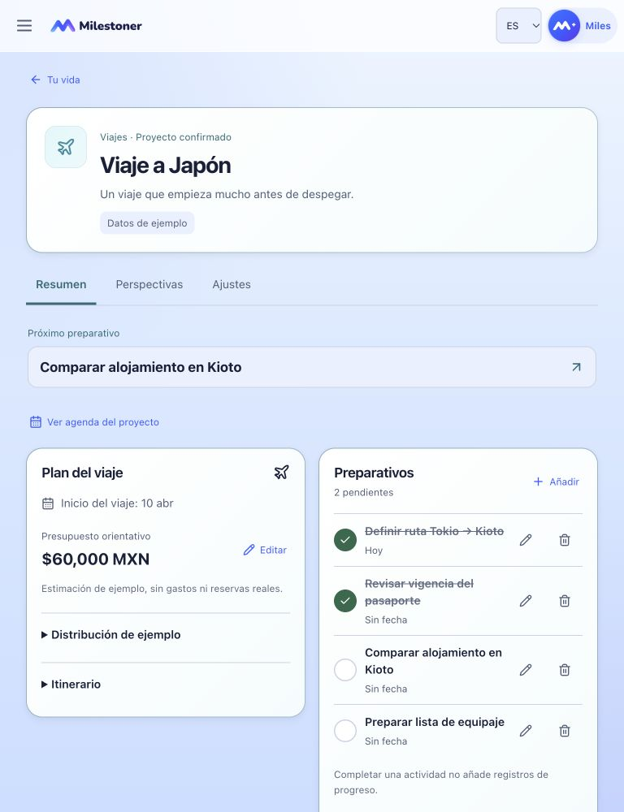
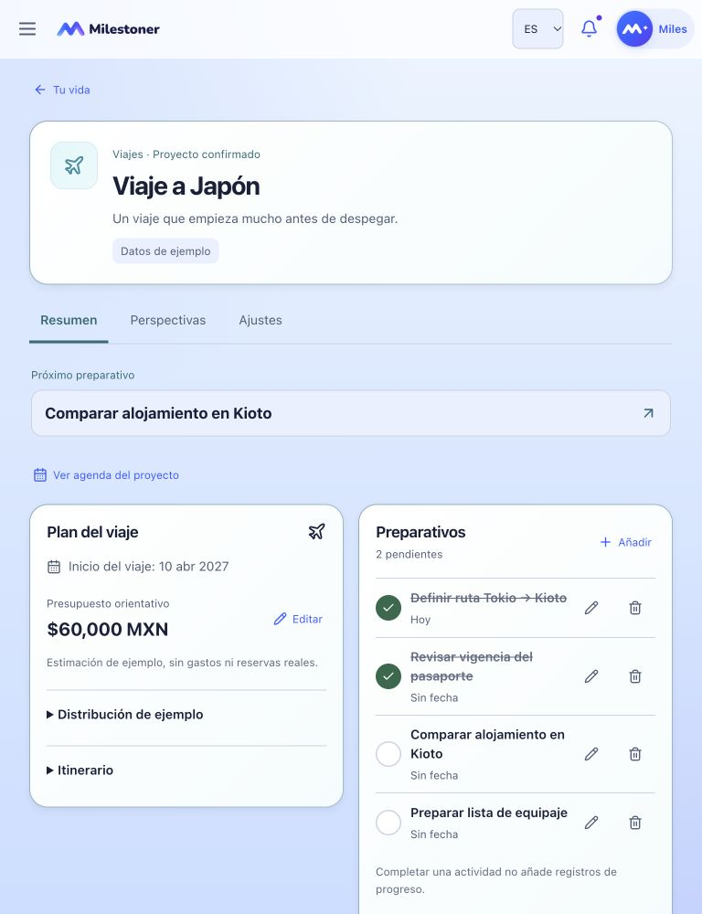

PENDING OWNER VISUAL AND FUNCTIONAL REVIEW. Pase editorial EN/ES: menos introducciones, acciones más claras y años visibles en fechas de proyectos. Publicar no constituye aceptación UX ni nativa.
Antes: baseline cbb3868, capturado del preview antes de editar. Después: candidata V2.6.1a. Cada par usa el mismo estado ficticio, idioma, apariencia y viewport. Los enlaces utilizan el estado de tu navegador; no reinician tus datos.
Se conservan los avisos antes de confirmar, asociar, restablecer o descartar; no hay IA, autenticación ni Sync reales. El primer ejemplo de onboarding sigue aislado de los Projects de la app. “Descartar sugerencia” cambia sólo la etiqueta de la acción existente; la afinidad “No mucho / Not really” permanece intacta.





Se abre desde la primera idea de Discover, “A weekend between small towns and train stations”, mediante Explore with Miles. Nada se crea para capturar la propuesta.





Diferido: centralización global de avisos (V2.6.1b), compactación de Profile/Badges (V2.6.1c), Account y contratos nativos. No se cambia la geometría orbital, Home, modelos, persistencia ni navegación. Los originales privados permanecen fuera del repositorio.